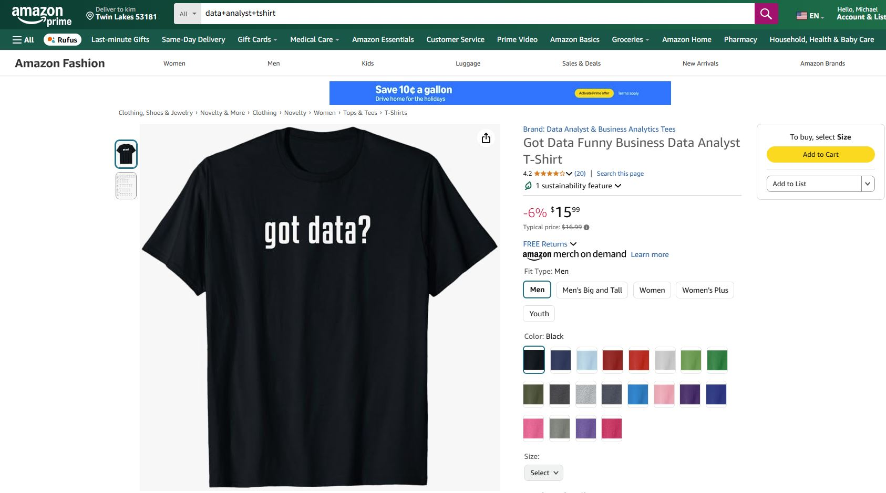

In this project we conducted comprehensive network analysis of urban mobility patterns using 11 million sampled taxi rides in Chicago from 2013-2023. We applied advanced graph theory techniques including PageRank and community detection algorithms to understand transportation dynamics and identify key hubs. Using Python with NetworkX, Pandas, and NumPy, we developed efficient data processing pipelines that reduced analysis time by approximately 95%. Through the creation of over 20 Matplotlib visualizations, we revealed consistent patterns in taxi usage across different conditions and years.

In this project we developed a full-stack web application for COVID-19 prediction and analysis to provide accessible insights for healthcare decision-making. We integrated multiple machine learning models including Random Forest, Gradient Boosting, and Neural Networks using Flask framework. Using pandas and scikit-learn for data processing and Matplotlib with Seaborn for visualization, we created an intuitive interface for risk assessment. The application successfully implemented A/B testing for model optimization and provided comprehensive documentation following software development best practices.
In this project we engineered an automated data pipeline utilizing CoinMarketCap's API to track and analyze real-time cryptocurrency market data. We implemented comprehensive data transformation pipelines using Pandas and NumPy to process market metrics including price movements, market cap, and trading volumes across multiple timeframes. Using Seaborn and Matplotlib, we created dynamic visualizations analyzing cryptocurrency price trends and percentage changes across different intervals. The system achieved a 95% reduction in manual data collection time while maintaining robust error handling and automated CSV generation for historical analysis.
In this project we analyzed over 3,600 Airbnb listings to identify optimal investment opportunities in the Seattle real estate market. We developed interactive Tableau visualizations mapping price distributions across zip codes and analyzing seasonal trends across 23M+ calendar records. Using geospatial analysis techniques, we created comprehensive visualizations correlating bedroom count with pricing and market saturation. The dashboard provided valuable insights into peak revenue periods and neighborhood-level market dynamics for property investment decisions.

In this project we created an interactive dashboard visualizing global infection rates, mortality trends, and vaccination progress across 200+ countries. We developed complex SQL queries utilizing joins, CTEs, and aggregate functions to analyze 85,000+ records. Using Tableau, we built dynamic visualizations including choropleth maps, time series forecasting, and comparative analytics. The dashboard effectively communicated pandemic trends through automated data cleaning pipelines and cross-country comparison analytics.

In this project we developed an advanced detection system for early-stage wildfires using RGB images to enable rapid emergency response. We created state-of-the-art deep learning models including Vision Transformers (ViT), Convolutional Neural Networks (CNN), and hybrid architectures to effectively distinguish wildfires from similar visual phenomena like mist and sunsets. Using TensorFlow, PyTorch, and Hugging Face transformers, we implemented a robust pipeline for data augmentation and model fine-tuning. The system achieved outstanding results, with our ViT model reaching 97.06% detection accuracy, outperforming traditional CNN (88.54%) and hybrid approaches (95.61%). These results demonstrated significant potential for enhancing environmental monitoring capabilities.
In this project we engineered a system to predict COVID-19 cases for optimizing healthcare resource allocation and improving testing accuracy. We implemented multiple algorithms including Decision Trees, Logistic Regression, Regular Regression, and K-Nearest Neighbors to create a robust prediction framework. Using scikit-learn, Pandas, and Matplotlib, we developed comprehensive feature selection processes and correlation analysis that improved model performance by 12%. Our ensemble methods achieved remarkable results, with Method 1 reaching 97.19% accuracy while Method 2 provided enhanced sensitivity to minimize false negatives.

In this project we analyzed global COVID-19 data to uncover insights about infection rates, mortality trends, and vaccination progress. We engineered comprehensive SQL queries implementing joins, CTEs, and temp tables to process over 85,000 records of pandemic data. Using advanced SQL operations including partition by clauses and window functions, we created dynamic views for data visualization and trend analysis. The analysis provided valuable insights into vaccination effectiveness and cross-country comparisons through sophisticated data transformation pipelines.

In this project we developed a comprehensive data cleaning pipeline for Nashville housing data to enable accurate market analysis. We implemented sophisticated SQL operations including string functions and PARSENAME operations to standardize address formats and location data. Using CTEs and window functions, we identified and removed 104 duplicate records while enhancing data usability through CASE statements and string manipulations. The resulting standardized dataset provided a robust foundation for housing market analysis through systematic data quality improvements.

In this project we conducted in-depth analysis of movie industry data to identify key factors influencing revenue performance. We developed Python data analysis pipelines using pandas, seaborn, and matplotlib to process data from 5,000+ movies. Using various statistical methods (Pearson, Kendall, Spearman), we created correlation analysis frameworks to measure relationships between variables. Our interactive visualizations including heatmaps and scatter plots effectively revealed the connections between movie budgets, votes, and revenue, providing actionable insights for industry stakeholders.

In this project we engineered an advanced stock price prediction system using multiple deep learning architectures to analyze market movements. We developed a comprehensive approach comparing CNNs, GRUs, and LSTM networks to capture complex temporal patterns in financial data. Using TensorFlow, Keras, NumPy, and Pandas, we created extensive preprocessing pipelines and feature engineering systems to handle market indicators and time series data. Our implementation achieved exceptional accuracy with mean squared errors of 10^-9, while maintaining a modular architecture for easy model comparison.

In this project we developed a personalized movie recommendation system combining collaborative filtering and association rule mining techniques. We analyzed transaction datasets of varying sizes (1k to 75k) using R and the arules package to uncover viewing patterns and user preferences. Using the Apriori algorithm and cosine similarity metrics, we created sophisticated user profiling systems based on genre preferences and viewing history. The implementation successfully identified frequent itemsets and generated meaningful association rules, demonstrating effective handling of large-scale user preference data.

In this project we implemented a U-Hierarchical Dilated Network (U-HDN) architecture to detect structural cracks in concrete infrastructure for automated maintenance monitoring. We designed a sophisticated system with three key components: a U-net architecture for feature extraction, a multi-dilation module for enhanced feature detection, and a hierarchical feature learning module for multi-scale analysis. Using TensorFlow, Keras, and OpenCV, we developed comprehensive image preprocessing pipelines and implemented various model architectures for comparison. Our U-HDN achieved a 59.7% F1-score (ODS), demonstrating effective crack detection capabilities while handling varying surface conditions.

In this project we engineered an automated web scraping system to track Amazon product prices and generate comprehensive price history datasets. We developed robust data collection pipelines using Python, BeautifulSoup, and Requests to continuously monitor product information. Using automated CSV generation and SMTP email notifications, we created a reusable framework for continuous data collection and price monitoring. The system achieved significant efficiency improvements by automating manual data collection processes while maintaining data quality through robust error handling.
In this project we created an interactive Excel dashboard analyzing bike purchase patterns to understand customer demographics and preferences. We developed automated data cleaning pipelines for duplicate removal, data standardization, and age bracket calculations. Using pivot tables and advanced Excel functions, we built dynamic visualizations analyzing income levels, commute distances, and age demographics. Our implementation of interactive slicers enabled multi-dimensional analysis across marital status, education, and region, providing comprehensive insights into purchasing behavior.